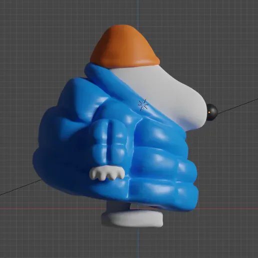
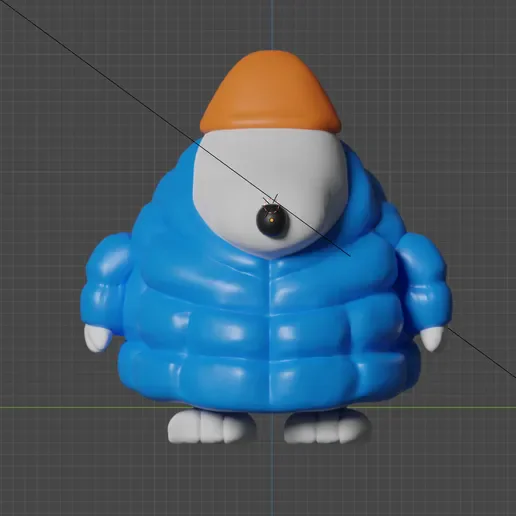
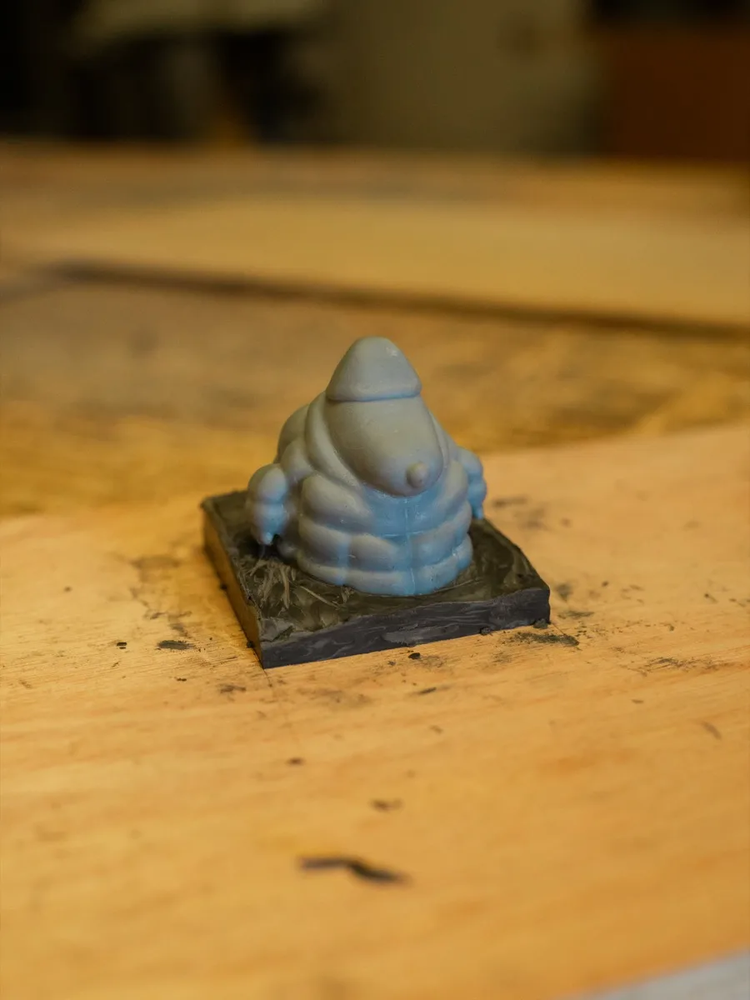
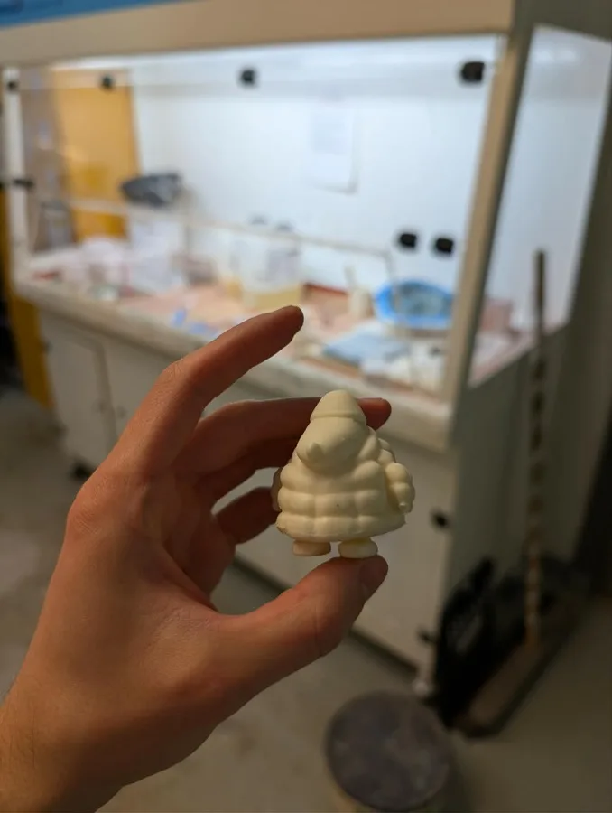

3D Design · 3D Printing · Blender · AR
Puffer Jacket Snoopy

Reference
3D Model




AR Filter
About the project
This started with a single panel from a Peanuts comic, Snoopy bundled up in a puffer jacket, looking very cute. I wanted a physical version of it, but no 3D model existed anywhere online, so I decided to make one myself.
I taught myself Blender from scratch specifically for this project, sculpting the model by hand using the comic panel as reference. Once I was happy with the shape, I 3D printed and hand-painted a version, and later made a silicone mould from a resin print to cast additional copies.
I also rigged the model and built a TikTok AR filter with it, so the wee guy walks around in a loop, which felt like the right way to see him brought to life.